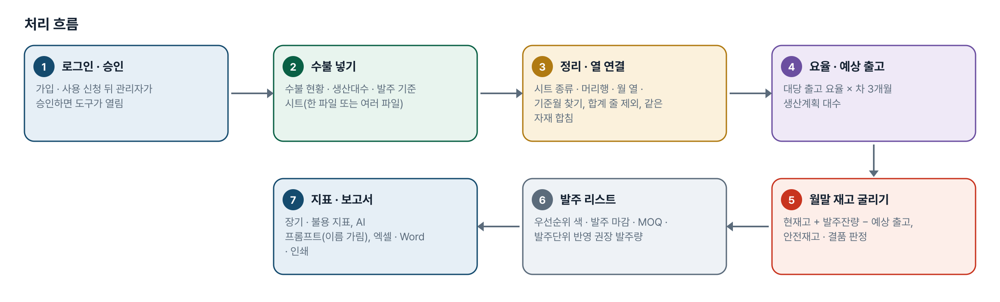
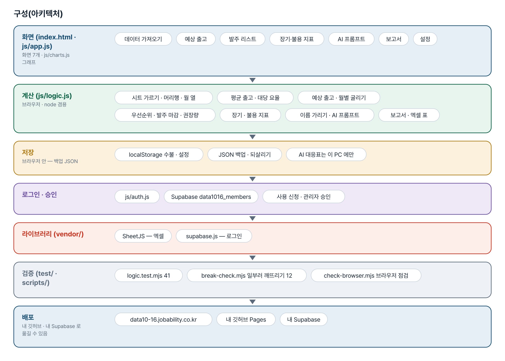
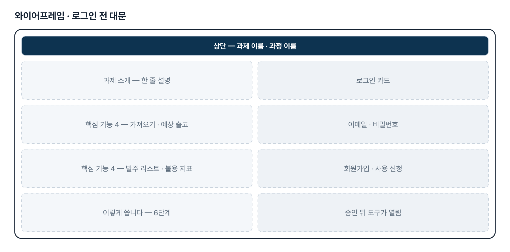
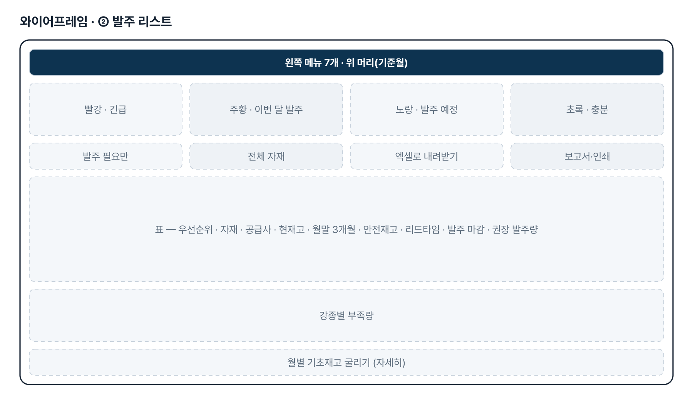
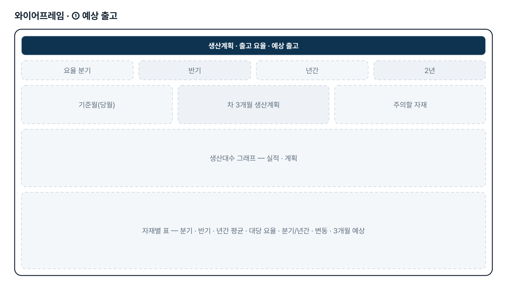
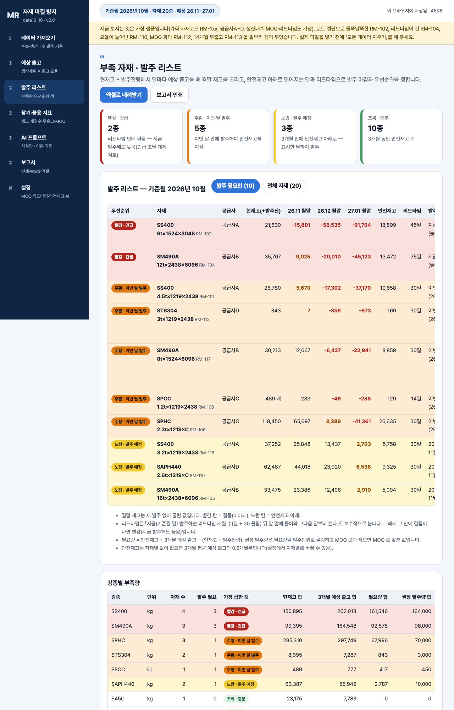

기획서 내려받기
파이프라인 · 아키텍처 · 와이어프레임 · 개발일지가 들어간 워드 문서입니다. 버전마다 따로 남깁니다.
| 버전 | 날짜 | 바뀐 점 | 파일 |
|---|---|---|---|
| v2.0 | 2026-11-10 | 최종 기획서 — 파이프라인 · 아키텍처 · 와이어프레임 정리 / 로그인 · 사용 신청 · 관리자 승인(요청자 Supabase 로 옮길 수 있게) / 로그인 전 대문 | 워드 내려받기 |
요구사항과 구현
| 기획서 요구 | 구현 |
|---|---|
| 입출고 수불(excel) 파일 기반 | 수불 현황 · 생산대수 · 발주 기준 시트 자동 가름, 머리행 · 월 열(「2026-09」「M-1」 등) · 기준월 찾기, 열 연결 확인, 합계 줄 제외 |
| 생산대수 대비 규격별 자재 투입 요율 | 대당 요율 = 직전 N개월 출고 합 ÷ 같은 달 생산실적 대수 합(분기 · 반기 · 년간 · 2년 단추), 「분기/년간」 요율 변화 표시 |
| 차 3개월 생산대수 기반 예상 출고량 | 대당 요율 × 차 3개월 생산계획 대수, 계획이 없는 달은 직전 평균 실적 대수 |
| 월별 기초재고를 감안한 부족 강재량 | 현재고 + 발주잔량에서 달마다 굴린 월말 재고, 안전재고 대비 부족량 · 결품 표시, 강종별 부족량(단위가 같은 것끼리) |
| 발주 우선순위 색상 구분 | 빨강 긴급 · 주황 이번 달 발주 · 노랑 발주 예정 · 초록 충분 + 발주 마감 |
| MOQ · Lead time 을 감안한 발주 시점 | 자재별 MOQ · 리드타임 · 발주단위 · 안전재고(설정 · 발주 기준 시트), 권장 발주량 = 필요량을 발주단위로 올림 · MOQ 맞춤 |
| 장기 재고 등 불용재 사전 방지 지표 | 재고 개월수 · 마지막 출고 · 출고 감소 · MOQ 과다 · 재고 금액(단가가 있으면). 기준값은 임시 |
| lot 단위 절단으로 특정 규격 미결 | 월별 출고 변동계수로 「들쭉날쭉」 자재를 찾아 안전재고 상향을 권함. 절단 계획 직접 반영은 2단계 |
그림으로 보기






개발일지
2026-11-10 · 최종 기획서 · 로그인
- 로그인 · 사용 신청 · 관리자 승인 키트 적용(표 data1016_members)
- 로그인 전 대문 — 과제 소개 · 핵심 기능 4 · 이렇게 씁니다
- 최종 기획서 v2.0 — 파이프라인 · 아키텍처 · 와이어프레임
- 내 깃허브 · 내 Supabase 로 옮기는 안내서
- 로직 41 통과
2026-10-27 · 버튼 · 결과 불일치 점검
- 설정에서 요율 2년을 고르면 ① 단추가 하나도 눌리지 않던 것 — 「요율 2년(24개월)」 단추
- 가져온 때 · 백업 파일 이름이 UTC 로 9시간 이르던 것 — 이 PC 시각으로
- 모든 js · css 에 ?v=판, fresh-guard, 판이 다르면 새로고침 안내
- 로직 41 통과, 고치기 전으로 되돌리면 검사 실패 확인
2026-10-27 · 기획서 정리 + 1단계
- 패들릿 제출 글로 기획서 v0.1
- 가상 수불(자재 20종 × 직전 24개월 + 생산대수 + 발주 기준) — lot 절단 · 긴 리드타임 · 요율 증가 · MOQ 과다 · 무출고 패턴과 대조군
- 화면 7개 — 가져오기 · 예상 출고 · 발주 리스트 · 장기·불용 · AI · 보고서 · 설정
- 로직 40 통과, 일부러 깨뜨려 확인 12가지, 브라우저 점검 34